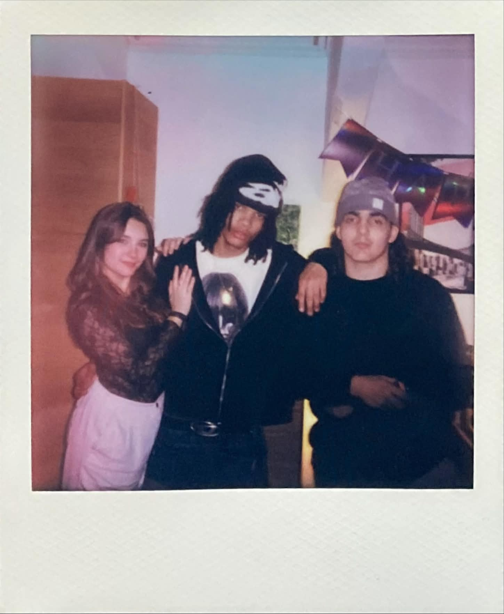
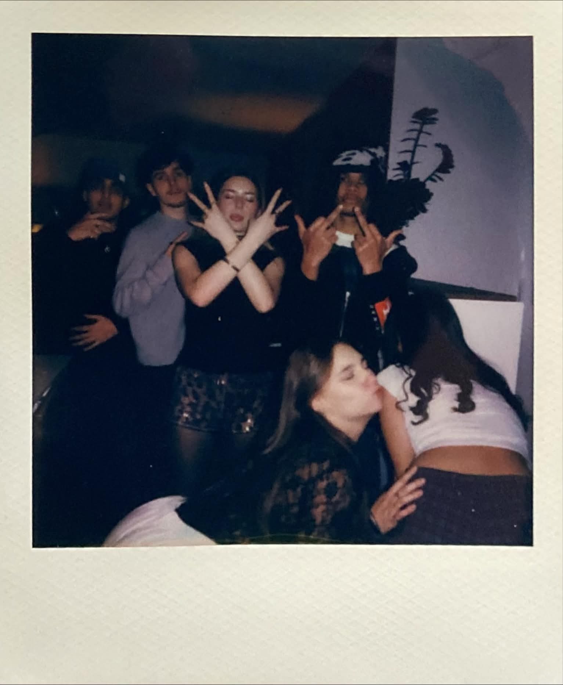
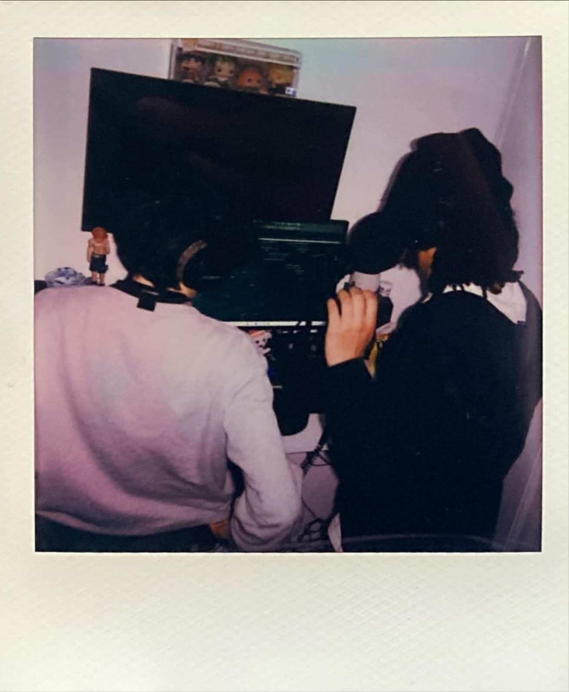
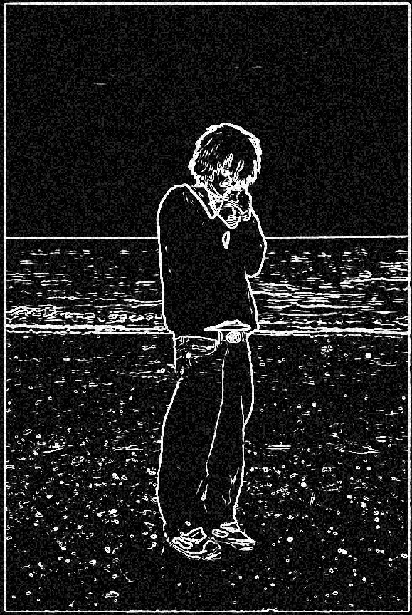
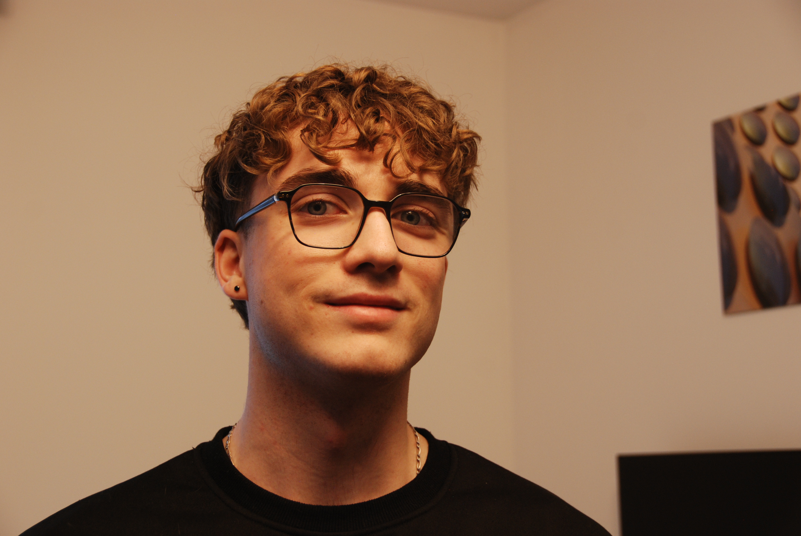
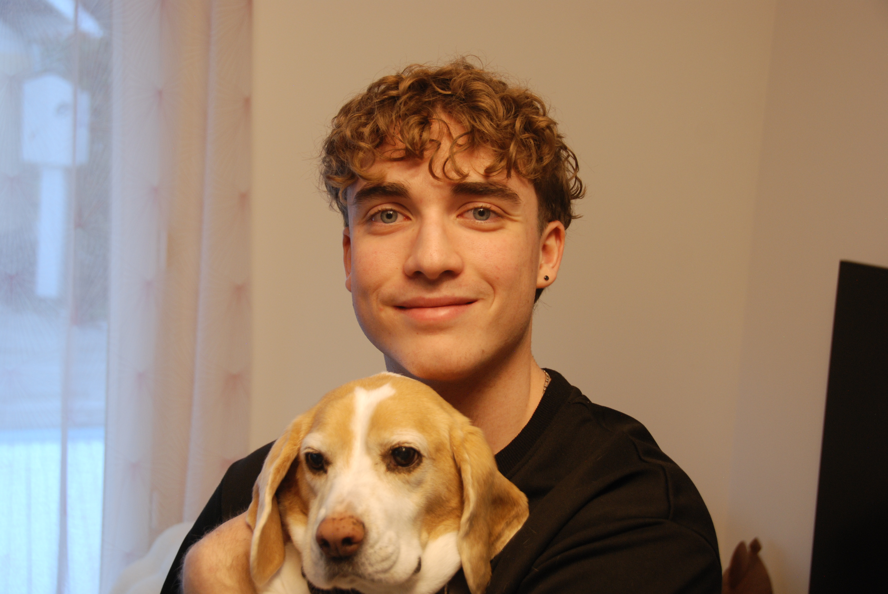
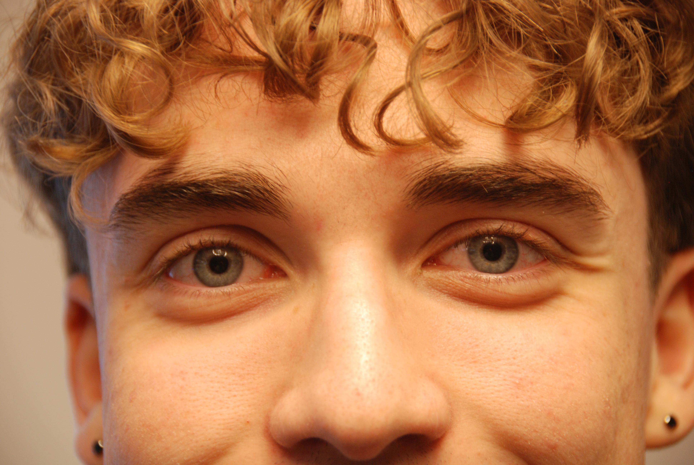
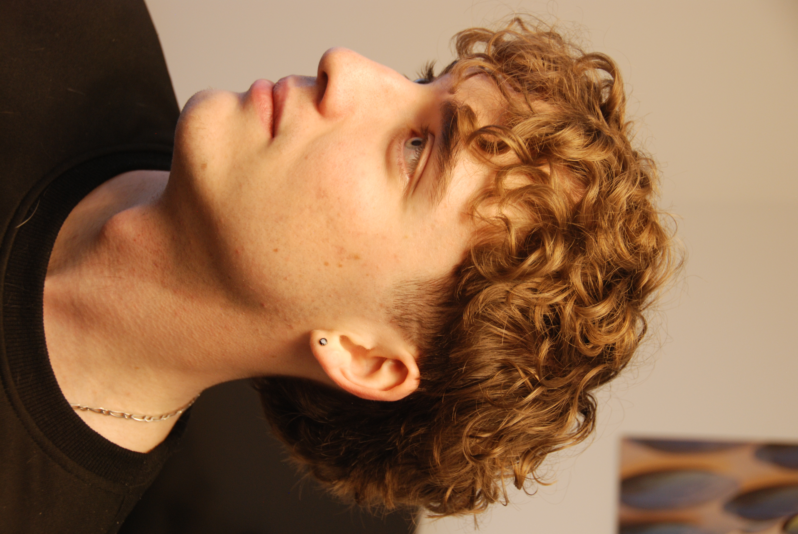

Projets
Passionné par la création, du développement web à la direction artistique, en passant par le son.
Voici quelques exemples de mes travaux.
À PROPOS
Victor Gaillot
Je suis un profil hybride, évoluant à la croisée du code, du design visuel et du son.
Pendant longtemps, j'ai choisi la sécurité. Attiré depuis toujours par la création, j'ai d'abord esquivé ce milieu par peur de son incertitude, privilégiant un cursus technique classique en Réseaux et Télécommunications. Mais à force de perceverer dans une voie qui ne me correspondait pas, j'ai fini par saturer. J'ai alors pris la décision de tout arrêter pour écouter ce besoin qui m'anime depuis l'enfance : tester, créer, construire.
Aujourd'hui, je ne rejette pas mon bagage technique, au contraire : j'en ai fait mon meilleur outil de création. Mon application KaraFlow est née de cette fusion. J'y utilise la rigueur du développement web et de la programmation pour donner vie à un projet profondément lié à ma passion pour la musique.
Je ne me contente plus de créer pour créer. Je cherche à comprendre les mécanismes derrière le web et le design pour concevoir des univers qui ont du sens, avec pour objectif de devenir, à terme, créateur multimédia indépendant.
Galerie
Si mes projets présentent mes réalisations abouties, cette galerie est mon mur
d'expression libre.
C'est ici que je rassemble mes photos et mes récentes productions musicales, pour garder une trace de mon
évolution
créative.







